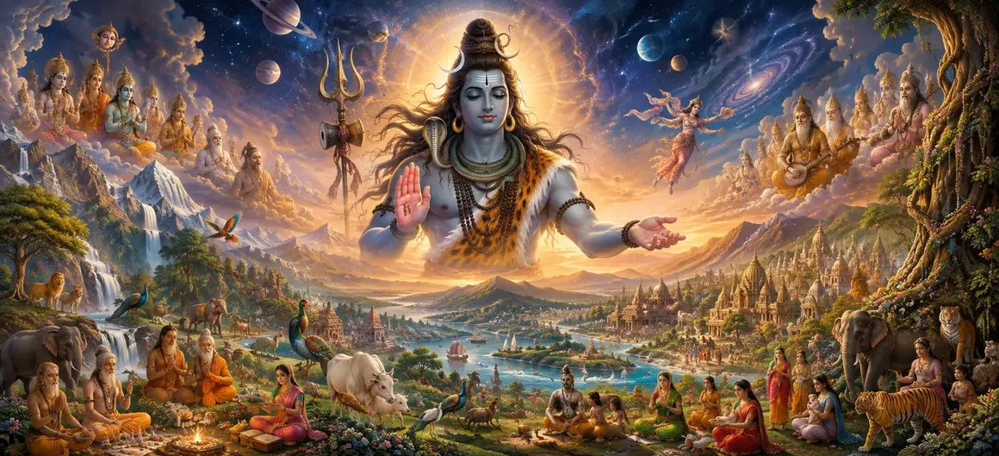

The Description of Creation — Part 3
In Chapter 12 of the Vayaviya Samhita, Lord Vayu deepens the discourse on cosmic manifestation, detailing advanced levels of universal structuring under the supreme will of Lord Shiva.
This third part builds upon previous expositions, guiding seekers through the intricate mechanics that prepare the cosmos for higher divine agency.
Devotees gain profound clarity on the progressive unfolding of existence.
Chapter 12 Comprehensive Highlights
Advanced Unfolding
Deeper exploration of cosmic manifestation phases.
Cosmic Mechanics
Understanding structural harmony in universal creation.
Higher Orders
Examining the organizational tiers established by divine grace.
Shiva’s Supremacy
Recognizing Supreme Shiva as the ultimate source of all realities.
Scriptural Depth
Unveiling subtle metaphysical layers of cosmic architecture.
Gateway to Brahma & Vishnu
Setting the stage for the appearance of principal cosmic deities.
Core Topics in This Chapter
- 01Advanced Stages of Cosmic Unfolding→
- 02Integration of Subtle and Gross Principles→
- 03Establishing Universal Structural Harmony→
- 04Preparation for Higher Divine Agencies→
- 05Tiers of Cosmic Order and Governance→
- 06Shiva’s Transcendent Role in Creation→
- 07Metaphysical Architecture of the Universe→
- 08Sustaining Universal Life and Energy→
- 09Devotional Contemplation on Divine Creation→
- 10Transition to The Creation of Brahma and Vishnu→
Advanced Stages of Cosmic Unfolding
Lord Vayu details how the universal fabric expands further into complex structural domains under divine law.
This stage bridges foundational creation with functional cosmic governance.
Integration of Subtle and Gross Principles
The subtle mental and energetic matrices harmonize seamlessly with physical manifestations.
This synthesis ensures stability across all realms of existence.
Establishing Universal Structural Harmony
Every celestial sphere and cosmic plane is organized with absolute precision, reflecting divine intelligence.
Nothing in the cosmos is left to chance.
Preparation for Higher Divine Agencies
The cosmic setup reaches a critical juncture where principal deities are empowered to execute creation and maintenance.
This sets the stage for the emergence of Brahma and Vishnu.
Tiers of Cosmic Order and Governance
The text explains the hierarchical tiers governing cosmic forces, ensuring regular cycles of time and existence.
Shiva’s Transcendent Role in Creation
Amidst expansive cosmic evolution, Supreme Shiva remains untouched, acting as the supreme witness and foundation.
Metaphysical Architecture of the Universe
Seekers explore the profound spiritual architecture underlying physical reality, inspiring deeper contemplation.
Sustaining Universal Life and Energy
Continuous cosmic energy flow is maintained through the grace and presence of the Supreme Lord.
Devotional Contemplation on Divine Creation
Meditating on these descriptions awakens unwavering devotion and awe towards Supreme Shiva.
Transition to The Creation of Brahma and Vishnu
Concluding Part 3, Lord Vayu prepares the narrative for the momentous creation of Brahma and Vishnu.
Extended Key Teachings of Chapter 12
Cosmic Tiers
Advanced structural setup of universes.
Divine Law
Governance of creation through cosmic principles.
Deity Prep
Preparing the cosmos for Brahma and Vishnu.
Shiva's Witness
Transcendent lord supporting all existence.
Metaphysics
Subtle layers of cosmic architecture.
Next Chapter Gateway
Transitioning to the creation of Brahma & Vishnu.
Expanded Spiritual Reflection
When we contemplate the advanced structuring of the cosmos, we perceive the supreme intelligence of Lord Shiva. Every tier of creation operates in flawless harmony, reminding us that true peace comes from aligning our lives with the divine cosmic order.
Living the Message of Chapter 12
Align your daily actions with higher principles of truth, righteousness, and devotion.
Recognize the divine order operating behind the scenes of every life circumstance.
Cultivate inner stillness by meditating upon the transcendent presence of Supreme Shiva.
Detailed Key Spiritual Concepts
The advanced expansion of cosmic creation.
The assignment of cosmic governance tiers.
The supreme consciousness supporting the universe.
The preparatory phase for principal deities.
The laws governing universal architecture.
The direct transcendent presence of Shiva.
Exhaustive Chapter Summary
Vayaviya Samhita Chapter 12 ('The Description of Creation — Part 3') continues the profound narrative of cosmic unfolding by detailing advanced structural tiers, universal governance principles, and metaphysical architecture under the supreme will of Lord Shiva. This chapter serves as a vital bridge, preparing the seeker for the momentous appearance of Brahma and Vishnu in the next chapter.
Frequently Asked Questions
1. What is the primary theme of Vayaviya Samhita Chapter 12 ('The Description of Creation — Part 3')?
The chapter further deepens the cosmic narrative, explaining advanced stages of universal creation and structural arrangement under Lord Shiva.
2. How does Part 3 expand upon previous creation chapters?
It builds directly upon Parts 1 and 2 by elucidating subtler cosmic principles and preparing for the subsequent appearance of major deities.
3. What role does Lord Vayu play in conveying this knowledge?
Lord Vayu serves as the enlightened preceptor revealing the intricate cosmic mechanics ordained by Supreme Shiva.
4. How is Supreme Shiva viewed throughout this creative unfolding?
Supreme Shiva is understood as the transcendent foundation and ultimate regulator of all manifested orders.
5. Why is the study of cosmic creation emphasized in Vayaviya Samhita?
It helps seekers comprehend the vastness of divine design, fostering deep devotion and spiritual detachment from material illusions.
6. What is the next chapter for navigation after this chapter?
The next chapter for navigation is 'The Creation of Brahma and Vishnu'.
“As the cosmos unfolds in its perfect structure, Supreme Shiva remains the eternal, unchanging foundation upholding all realms and beings.”
Continue Through Vayaviya Samhita
Chapter 12 concludes. Continue to the next chapter, The Creation of Brahma and Vishnu.